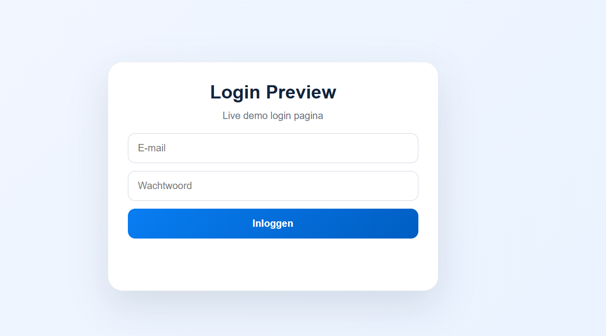
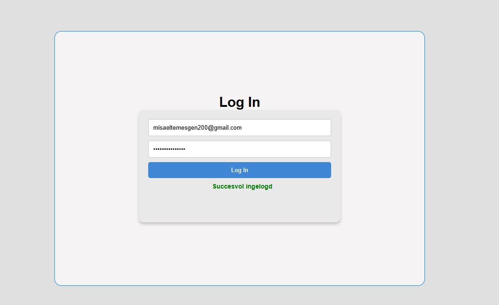
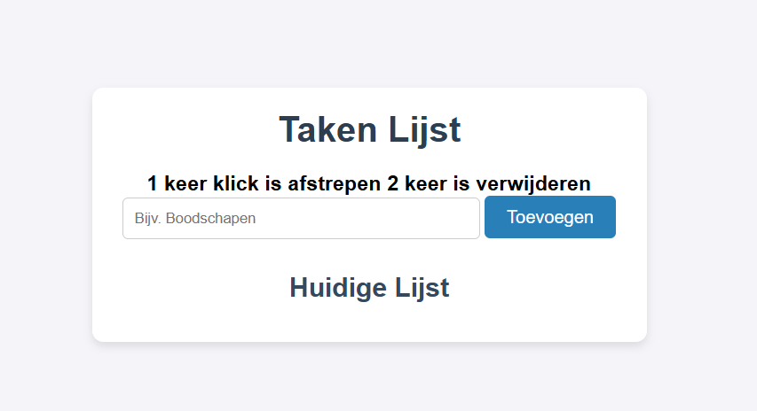
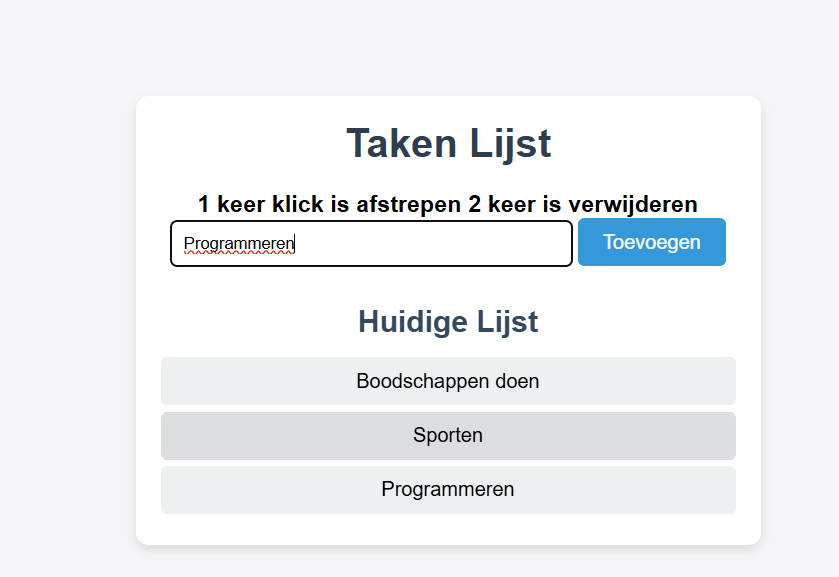
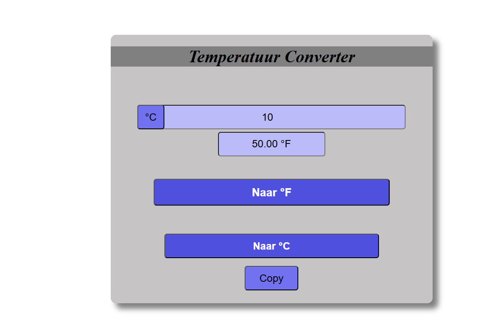
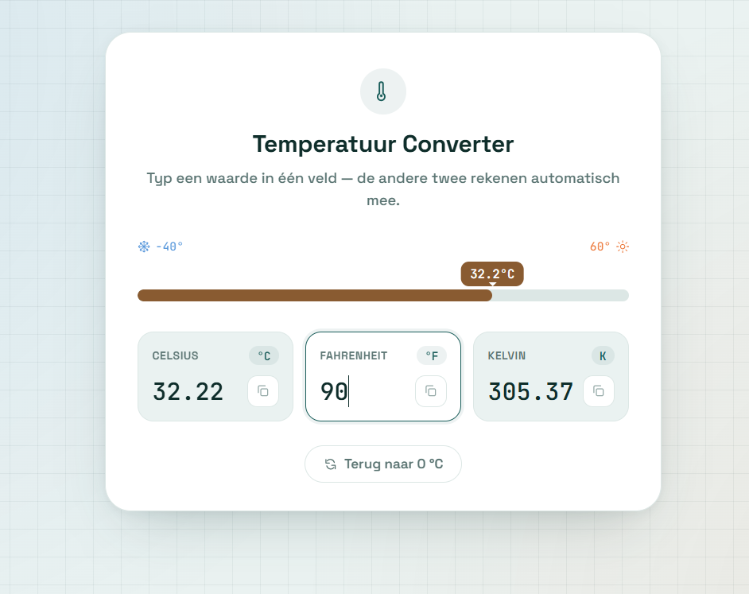
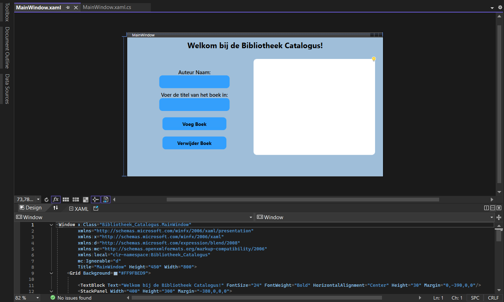
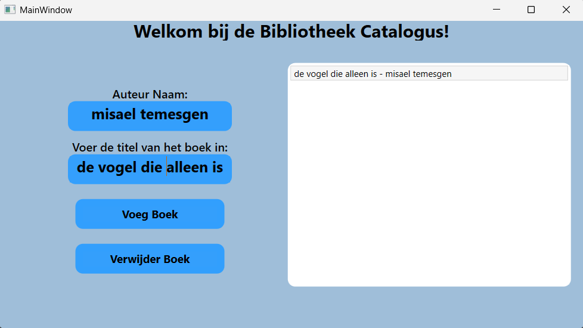
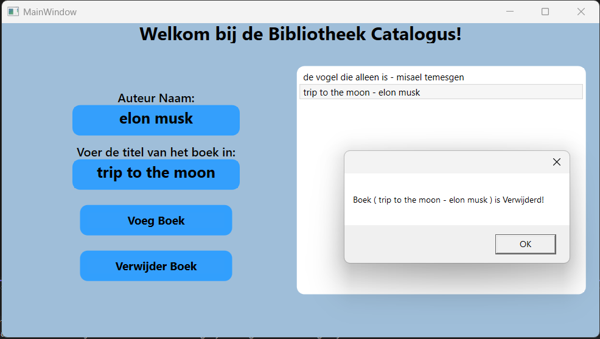
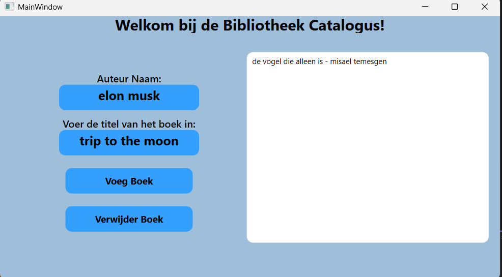

Projecten.
ik heb het meest met html css en javascript gewerkt tijdens mijn opleiding en vrije tijd.
Op deze pagina staan enkele opdrachten en projecten die ik heb gemaakt tijdens mijn opleiding en tijdens mijn vrije tijd (4 projecten momenteel). de programmeer talen die ik gebruik voor deze projecten zijn C#, html, css en javascript basis vooral.
Project 1: Portfolio website
Ik heb deze website gemaakt om klein beetje mijn werk te laten zien. De site is simpel en rustig want dat vind ik fijn voor mijn portfolio, simpel en rustig.
Project 2: Inlogpagina met html,css en PHP
deze project heb ik gemaakt tijdens mijn vrije tijd. 2 fotos hieronder


Project 3: Takenlijst met HTML, CSS en JavaScript
deze takenlijst is gemaakt met HTML, CSS en JavaScript. het is een eenvoudige to-do lijst waarin je taken kunt toevoegen, verwijderen en markeren als voltooid. 2 screenshots hieronder.


Project 4: Temperature Converter ook met html,css en javascript
deze project heb ik aan het begin van het jaar gemaakt tijdens mijn opleiding. 2 fotos hieronder


Project 5: Bibiliotheek Catalogus C#
deze bibiliotheek catalogus is gemaakt om te oefenen met C# en wat sql database erachter, ik had het tijdje geleden gemaakt. 5 project screenshots hieronder.




